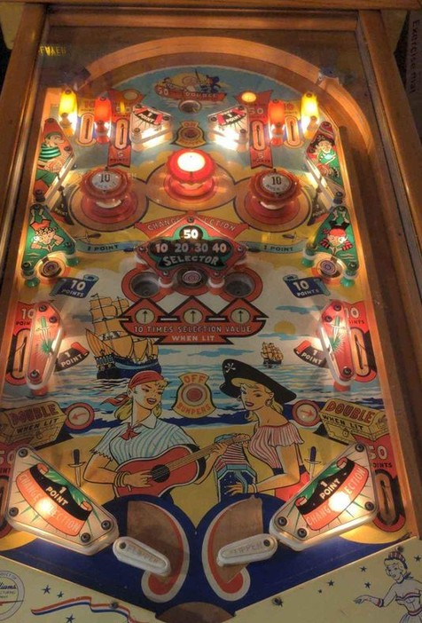

Not to be confused with Serenade (Alben, 1959), a rare French variant of Gondolier (Gottlieb, 1958).
Various features are lit intermittently based on 10- or 100-point switch hits, including:
Both out lanes are lit at the same time; otherwise, only one of these features is lit at a time.
Outer top lanes score 10 points.
The center pop bumper always scores 1 point, while the others score 1 point or 10 when lit; they are lit by pressing the button just below the top saucer, and unlit by the button halfway between the flippers and the center standup target.
Anything that scores exactly 1 point changes the value on the Selector between 10, 20, 30, 40, or 50 points. The Selector value is scored by shooting the center standup target or either gobble hole; if one of these three features is lit, it scores 10x the Selector value instead, worth up to 500 points. It can be very worth shooting a gobble hole directly if it is lit for 300 points or more, as that sum can frequently be more than an entire game's worth of points otherwise.
The middle side lanes score 10 and are positioned directly above the out lanes. There is a small nail against the side wall above the out lanes so that a ball coming down the 10 point lanes can be deflected back into play. Be sure to nudge off of this nail to take advantage of this whenever possible.
Slingshots score 1. Out lanes score 50 or 100 when lit. There is no end of ball bonus or extra ball feature. Tilt ends game, but only for the player who tilted.
The below picture of Serenade's playfield was taken from Pinside, where it is image #3454250.
